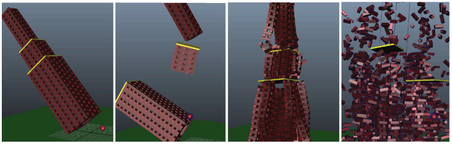

可创建由在层次中包含多个网格的碰撞形状的复合组成的单个刚体。您还可以从选择中创建多个刚体，而跳过已经具有附加刚体的对象。
注： 对于动力学刚体和运动学刚体，子形状使用“壳线”(Hull)形状类型，而静态刚体使用“网格”(Mesh)形状类型。
若要创建包含多个形状的刚体，请执行以下操作：
- 选择由多个对象组成的对象。
提示： 您可以使用“大纲视图”(Outliner)窗口（“窗口 > 大纲视图”(Window > Outliner)）选择多个对象。
- 从“Bullet”菜单中，选择“Bullet > 创建主动刚体”(Bullet > Create Active Rigid Body)。将所有选定对象设置为主动刚体。
- 在属性编辑器中，选择“BulletRigidBodyShape”。
- 找到“碰撞对象特性”(Collider Properties)，并从“碰撞对象形状类型”(Collider Shape Type)菜单中选择“复合”(Compound)。
当物体与复合对象碰撞时，复合对象将作为一个片段反应，而非多个片段。

示例：刚体解算中由 1000 块砖组成的塔。第一个塔为一个复合对象，而第二个分为三层，其中的每一层都设为复合对象。最后的两个图像显示的是设为壳线和立方体类型对象的单块砖。